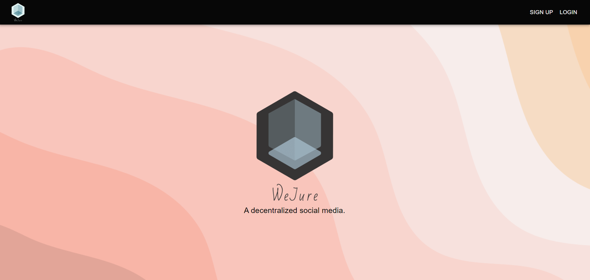

Welcome to WeJure
A decentralized, peer-to-peer social network written in ClojureScript, developed at HKU Business School.
No company owns the data: posts and profiles sync between users' browsers through GunDB relays, images live on IPFS, and direct messages are end-to-end encrypted.
BackgroundWhy WeJure exists and how it works.Getting StartedInstall, run and open WeJure on your machine.Using WeJurePosts, profiles, search and messages.

Features
- Accounts with a profile picture and a bio
- Posts with text, an image, or both, and a feed of the people you follow
- Following and unfollowing users
- Searching users by name and posts by text
- End-to-end encrypted direct messages, and blocking users
- Group chat with layered encryption (in the backend; no user interface yet)
Report bugs
WeJure is under active development. If you find a bug, please report it on GitHub.